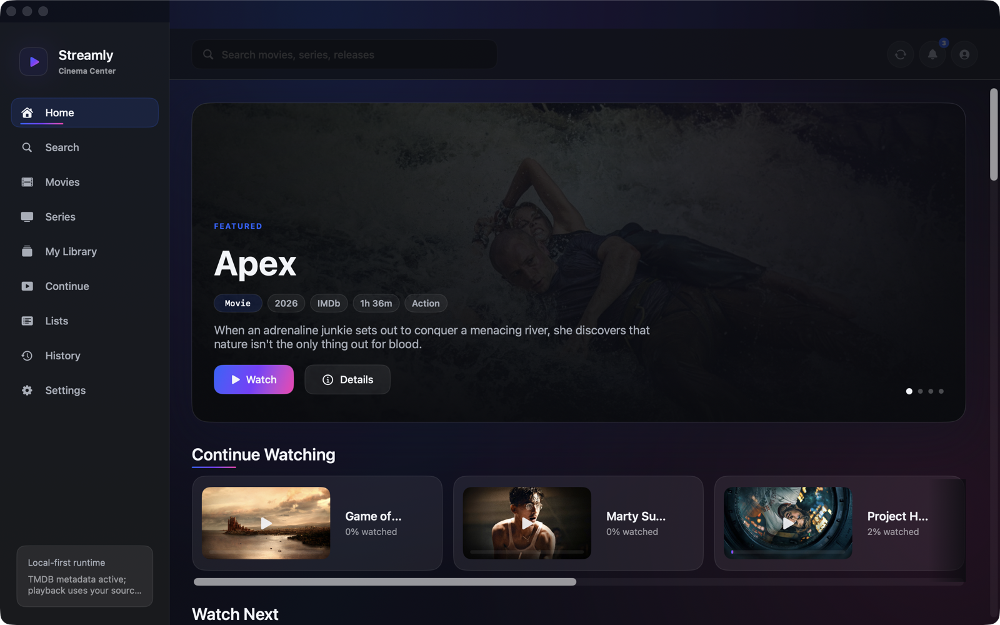
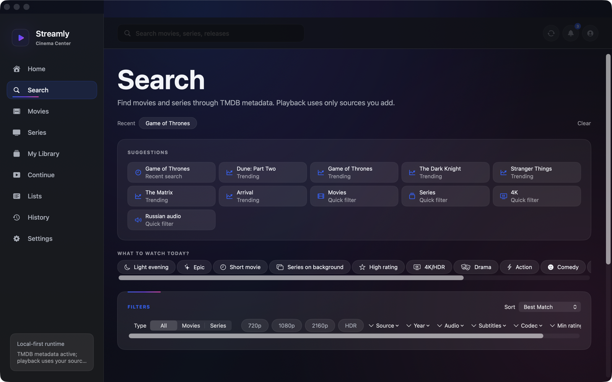
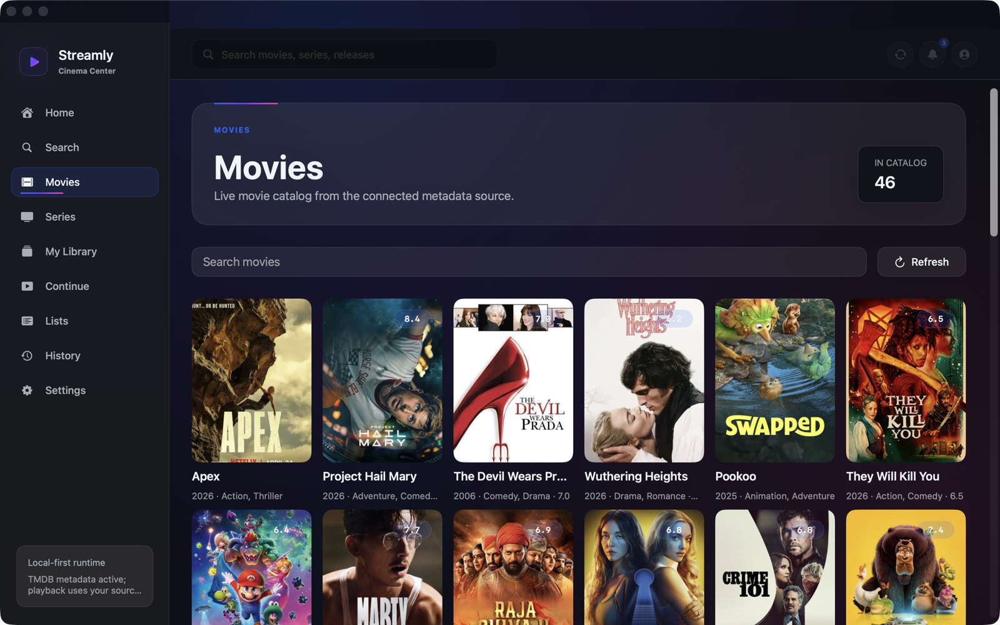
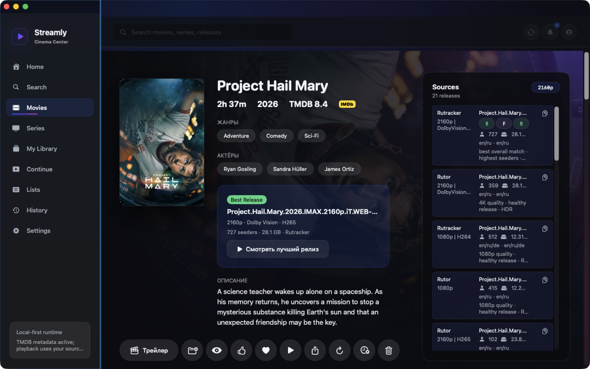
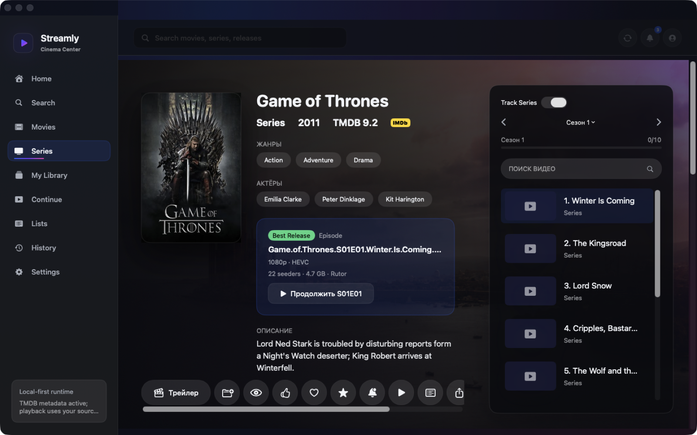
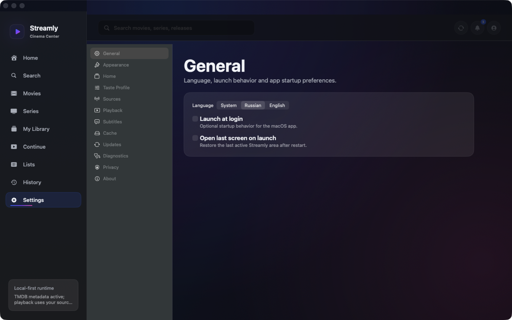

Movies catalog
Open the Movies section, scan posters, search within the catalog and jump into full detail pages.
macOS 13+ - Apple Silicon - Local-first
A native cinema center for movies, series and release-based playback.
Browse real catalogs, open detail pages, choose the best available release, continue episodes and keep your library on this Mac.

Product Screens






Product
Open the Movies section, scan posters, search within the catalog and jump into full detail pages.
Browse shows, track seasons, continue the next episode and inspect available episode releases.
Quality, seeders, codec, HDR and language signals push the best user-controlled source to the top.
Progress shelves use posters or episode imagery so unfinished movies and series are recognizable.
Add to library, mark watched, favorite, rate, share and manage local history from detail pages.
Actor rows and detail tabs keep discovery connected instead of trapping users on one title.
Streamly starts the selected release through the local playback path and keeps progress local.
Language, sources, playback, subtitles, cache, updates, diagnostics and privacy are controlled in-app.
Flow
Open Movies or Series and pick from the current catalog.
Review posters, ratings, cast, episodes and available releases.
Use the ranked best release or select a specific quality/source manually.
Return from Continue Watching, Watch Next, History or Library.
System Requirements
Download
The latest public `.dmg` is distributed through GitHub Releases.
Download for macOSChecksum: published beside every release DMG.
Installation
Streamly.app to Applications.Privacy
Legal Note